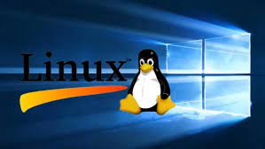
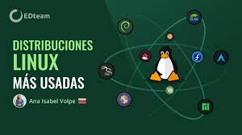

PROGRAMACION DE LAPSO 2021---2022
SISTEMAS OPERATIVOS LIBRES
PROGRAMACION DE LAPSO 2021---2022
SISTEMAS OPERATIVOS LIBRES
«Software libre» es el software que respeta la libertad de los usuarios y la comunidad. A grandes rasgos, significa que los usuarios tienen la libertad de ejecutar, copiar, distribuir, estudiar, modificar y mejorar el software. Es decir, el «software libre» codigo fuente abierto es una cuestión de libertad, no de precio. Para entender el concepto, piense en «libre» como en «libre expresión», no como en «barra libre». En inglés a veces decimos «libre software», en lugar de «free software», para mostrar que no queremos decir que es gratuito.
Es un programa o conjunto de programas de un sistema informático que gestiona los recursos de hardware y provee servicios a los programas de aplicación de software, ejecutándose en modo privilegiado respecto de los restantes (SON LOS QUE ADMNISTRAN LOS RECURSOS DEL COMPUTADOR)  1.Económico (más de mil millones de euros en licencias de Microsoft en España anuales)
2.Libertad de uso y redistribución. 3.Independencia tecnológica 4.Fomento de la libre competencia al basarse en servicios y no licencias 5.Sistemas sin puertas traseras y más seguros 6.Corrección mas rápida y eficiente de fallos 7.Desarrollo barato, sencillo y rápido de documentos 8.Independencia tecnológica de los Estados con respecto a grandes grupos económicos. 9.No adquieren virus hacer clic 10.Sistema en expansión 1.Dificultad en el intercambio de archivos (doc. de texto), dan errores o se pierden datos
2.Por lo general para su implementación se necesitan conocimiento previo de programación. 3.No existe un control de calidad previo 4.Hay aplicaciones específicas que no se encuentran en el software libre 5. Para su configuración se requieren conocimientos previos de funcionamiento del sistema operativo. 6.Interfaces gráficas menos amigables.
7.Dificultad en el intercambio de archivos.
8.Desconocimiento. El usuario común está muy familiarizado con los soportes de Microsoft, lo que hace elevar el costo de aprendizaje 9.Menor compatibilidad con el hardware.
10.Baja difusión en publicaciones. 1.Libertad de ejecución
2.Libertad de inspección 3.Libertad de redistribución. 4.Libertad para mejorar el programa. 5. No hay disco duro “C” 6.La instalación de software es un proceso diferente 7.No hay necesidad de preocuparse acerca de la infección de virus 8.Google es tu amigo se pueden encontrar soportes 9.Baja difusión en publicaciones. 10.trae incluido el paquete ofimatico . Mantener este tipo de sistemas e información toma tiempo y mucho esfuerzo. Si se encuentra un sistema operativo o un libro que le haya sido útil, por favor considere comprar una versión escrita de la documentación o por medio de donaciones. El despilfarro de recursos por parte del estado costarricense en la compra de licencias de sistemas operativos propietarios, toma a gran parte de las instituciones gubernamentales; el dinero utilizado podría canalizarse para un mejor soporte por parte de empresas que brinden sistemas operativos libres y de código abierto. La calidad del software libre depende de diferentes circunstancias, entre ellas la estabilidad de un sistema operativo, la capacidad de la comunidad en determinar y resolver errores a tiempo, la cantidad de recursos disponibles; todo se mejora según la calidad de los traductores, los encargados de reportar errores, los diseñadores de interfaces gráficas, los desarrolladores casuales y demás. Es importante tomar en consideración el uso de software privativo en estos proyectos. Es así como el uso de un sistema operativo GNU/Linux se vuelve rentable. La mayoría de distribuciones GNU/Linux son soportadas por compañías que desarrollan y venden bajo algún tipo de esquema comercial.
Algunos ejemplos incluyen Ubuntu, principalmente desarrollada por Canonical Ltd.; Mandriva Linux, por la compañía francesa Mandriva SA; y Suse Linux, mantenida y hecha comercial por Novell. Gran parte de las contribuciones también provienen de voluntarios que trabajan juntos a través de la Internet; otros son pagados en diferentes compañías, en síntesis, los voluntarios tendrían la última palabra en estos proyectos La comunidad (por ejemplo Debian) no oculta los problemas, aunque no es perfecta, mantienen una base de datos de los errores que el sistema operativo tiene, esto con el objetivo de repararlos.
Además, los problemas son visibles para los usuarios, éstos últimos suelen ser la prioridad junto con el uso de software libre. Es decir, el usuario está primero para mejorar su experiencia, esto junto con los intereses del software libre. Para comprender mejor los términos, es necesario aclarar: Linux, es sólo un núcleo, las expresiones, “Distribución Linux” y “Sistema Linux” son, justamente, incorrectos: son, en realidad, distribuciones o sistemas basados en Linux.  Estas expresiones fallan al no mencionar el software que siempre completa este kernel (núcleo), junto con los programas desarrollados por el Proyecto GNU. Richard Stallman, fundador de este proyecto, insiste que la expresión “GNU/Linux” sea sistemáticamente utilizada, esto para reconocer mejor las importantes contribuciones hechas por el Proyecto GNU y los principios de libertad con lo que fue fundado. El sistema operativo Debian ha elegido seguir esta recomendación, y así, nombra su distribución de acuerdo a lo anterior: Debian GNU/Linux 7 Es necesario un cambio de perspectiva: En Costa Rica se tiene la costumbre de utilizar sistemas operativos propiedad de Microsoft, esto lo notamos en las instituciones gubernamentales donde se gasta dinero en licencias para Windows y MS Office. Existen desventajas, al ser Windows un sistema de propiedad de una empresa, ella es la única que puede desarrollar una versión de éste, por ejemplo Windows XP y Vista. Con sistemas GNU/Linux nos adaptamos a las diferentes distribuciones.
Por el año 2010, la profesora de Mantenimiento de equipo de cómputo del colegio en el que estudiaba, nos hizo una copia de un sistema operativo GNU/Linux. A partir de ese momento comprendí la utilidad del uso del software libre y de código abierto, así como el estilo de vida de doble moral que muchos vivimos. Esto significa que comencé a utilizar herramientas en un sistema operativo gratuito, de alta calidad.Hoy, tres años después, he corrido diferentes distribuciones GNU/Linux en mi computador y he minimizado el impacto de virus, pérdida de información; así aprendí acerca de la filosofía que estos modelos siguen. Estos son importantes porque ha permitido que la Informática progrese, ya que si no tenemos acceso al código fuente no podríamos elaborar versiones mejores de programas y aplicaciones anteriores. Además, no es estrictamente el uso de GNU/Linux la única alternativa, tenemos otras opciones como el núcleo Hurd, sistema Minix, que nos permite formar parte de una comunidad. Es muy importante mostrar apreciación por la información que obtenemos, muchos libros están publicados bajo una licencia libre porque se quiere que todos nos beneficiemos..SISTEMAS OPERATIVOS
VENTAJAS DE LOS SISTEMAS OPERATIVOS LIBRES
DESVENTAJAS DE LOS SISTEMAS OPERATIVOS LIBRES
CARACTERISTICAS DE LOS SISTEMAS OPERATIVOS LIBRES
IMPORTANCIA DE LOS SISTEMAS OPERATIVOS LIBRES